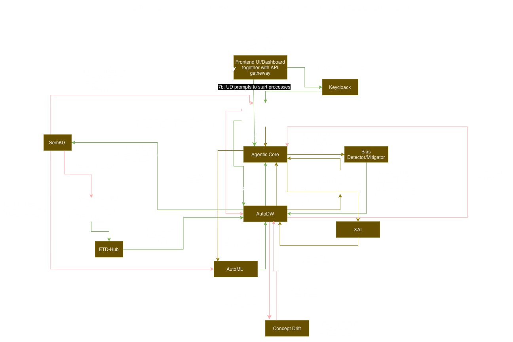

Architecture¶
The ALFIE AutoML Engine is a single FastAPI service that mounts five service
modules plus a shared core library under one unified /automl router, all
living under app/. The training services talk to AutoDW to fetch
datasets and upload trained models, and delegate all model training to one
consolidated ML engine (app/ml_engine).

flowchart TB
User(["Users / ALFIE web app"])
subgraph Engine["ALFIE AutoML Engine"]
subgraph Core["app/core - shared library"]
direction LR
COREUTILS["config · logging · typed errors · concurrency"]
DWHELP["AutoDW helpers"]
CHAT["ChatHandler (Azure AI)"]
end
subgraph MLE["app/ml_engine - consolidated ML engine"]
direction TB
HPO["Optuna HPO"]
FABRIC["Lightning Fabric trainer"]
HFM["Hugging Face models<br>image · video · audio · text · multimodal"]
TABENG["AutoGluon tabular engine<br>classification · regression · time series"]
HPO --> FABRIC
FABRIC --> HFM
end
subgraph Tabular["app/tabular_automl · /automl/tabular"]
TBR["tabular endpoint"]
end
subgraph Vision["app/vision_automl · /automl/vision"]
VIR["vision endpoint"]
end
subgraph Audio["app/audio_automl · /automl/audio"]
AUR["audio endpoint"]
end
subgraph Text["app/text_automl · /automl/text"]
TER["text endpoint"]
end
subgraph Plus["app/automlplus · /automl/automl_plus"]
direction LR
ACC["web accessibility + readability"]
VLMT["VLM tools<br>alt text · image prompts · image-to-website"]
end
end
AutoDW[("AutoDW<br>dataset and model store")]
User --> Tabular
User --> Vision
User --> Audio
User --> Text
User --> Plus
Tabular --> MLE
Vision --> MLE
Audio --> MLE
Text --> MLE
Tabular --> Core
Vision --> Core
Audio --> Core
Text --> Core
Plus --> Core
MLE --> Core
Tabular -- "fetch datasets / upload models" --> AutoDW
Vision -- "fetch datasets / upload models" --> AutoDW
Audio -- "fetch datasets / upload models" --> AutoDW
Text -- "fetch datasets / upload models" --> AutoDW
Plus -- "LLM/VLM calls" --> CHATUnified API¶
app/main.py builds a single FastAPI app and app/api.py mounts every
service router under one /automl prefix (e.g.
POST /automl/automl_plus/accepted_format/). Health endpoints (/health,
/ready) stay at the root. The app runs as one service on a single port
(see running the services).
| Service | Module | Prefix | What it does |
|---|---|---|---|
| Tabular AutoML | app/tabular_automl |
/automl/tabular |
Trains AutoGluon models on CSV/TSV/Parquet data (classification, regression, time series) via AutoGluonTrainer in the ML engine. |
| Vision AutoML | app/vision_automl |
/automl/vision |
Image and video tasks (classification, segmentation, detection, keypoints) plus multimodal (image + tabular) via the generic ML engine. |
| Audio AutoML | app/audio_automl |
/automl/audio |
Audio classification via the generic ML engine. |
| Text AutoML | app/text_automl |
/automl/text |
Text tasks (classification, question answering, causal/masked/seq2seq language modelling) via the generic ML engine. |
| AutoML+ | app/automlplus |
/automl/automl_plus |
LLM/VLM tools: web accessibility analysis, alt-text checking, image prompts, readability metrics. No model training. |
Shared core (app/core)¶
config.py— typed settings over the environment (single source of truth for env vars).concurrency.py—offload()runs blocking work in the Starlette threadpool so async endpoints don't block the event loop.exceptions.py— theAutoMLErrorhierarchy (validation, data, runtime, upload, ...).api_errors.py— maps those exceptions to HTTP status codes (400 / 500 / 502 policy) in one place.logging.py— structlog setup plus per-service rotating log files.chat_handler.py— facade over Azure AI Inference chat models (sync, async, streaming, with images).service_helpers.py— AutoDW dataset metadata fetch / download / model upload / payload building.dataset_extraction.py— shared ZIP + CSV + media-folder dataset extraction helpers used by the vision, audio, and text pipelines.health.py—/healthand/readyendpoints.utils.py— Jinja2 prompt template rendering.schemas/— Pydantic response models for the API.
Layering inside a service¶
Every service module follows the same layering, so the HTTP layer stays thin:
1 2 3 4 5 6 | |
The training pipelines in tabular_automl, vision_automl, audio_automl,
and text_automl share the same shape:
- Fetch dataset metadata from AutoDW.
- Resolve the correct download URL (respecting dataset splits).
- Download the dataset to a temporary directory (the media services also extract the ZIP).
- Validate user-supplied parameters against the dataset.
- Train within the given time budget (delegated to
app/ml_engine). - Serialize and zip the model artifacts.
- Upload the model and leaderboard back to AutoDW.
Blocking steps (network, training) are pushed off the event loop via offload.
Consolidated ML engine (app/ml_engine)¶
All model training lives in one package so the endpoints stay thin and the engines can evolve independently:
configs/— one JSON file per task type with candidate models and hyperparameter search ranges.tasks.py— Pydantic task models plus theSUPPORTED_VISION_TASK_TYPES,SUPPORTED_AUDIO_TASK_TYPES, andSUPPORTED_TEXT_TASK_TYPESslugs the routers use to validatetask_typeform parameters.dataset.py—BaseCSVDatasetand the Torch datasets reading samples from CSV.datamodule.py—BaseDataModuleplus per-task datamodules (splits, preprocessing, DataLoaders) andDATAMODULE_REGISTRY.model.py— thin wrappers around Hugging FaceAutoModelFor...classes, plus the tabular task models (SUPPORTED_TABULAR_TASK_TYPES).trainer.py—FabricTrainer(Lightning Fabric training loop with early stopping, time limits, and Optuna pruning),run_optuna_search, and the AutoGluon-backedAutoGluonTrainerfor tabular tasks.hpo/optuna_objectives.py— one Optuna objective per task type plusOBJECTIVE_REGISTRY;run_optuna_searchdispatches through the registry.feature_mapping.py— extracts label maps, tokenizer vocabularies, and fitted scaler/encoder state so preprocessing can be reproduced at inference.model_search.py— Hugging Face model discovery and small/medium/large size-tier filtering.
The generic engine covers image, video, audio, text, and multimodal tasks;
the vision, audio, and text endpoints simply scope which task types they
accept (image_* slugs on /automl/vision, audio_classification on
/automl/audio, text slugs on /automl/text).
A feature_mapping.json (label maps, tokenizer vocab, scaler/encoder state)
is saved alongside each trial so the preprocessing pipeline can be reproduced
when loading a trained model (see loading the model).
Repository layout¶
1 2 3 4 5 6 7 8 9 10 11 12 13 14 15 16 17 18 19 20 21 22 23 24 | |
Runtime output (not in git): logs/ holds per-service log files and
uploaded_data/ holds upload artifacts.